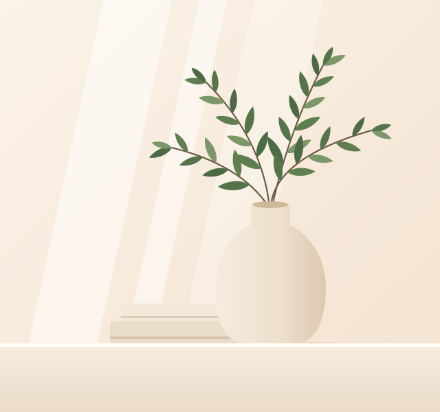

Liana Nan · Psiholog clinician sub supervizare
Un spațiu în care să înțelegi mai bine ceea ce trăiești
Poate treci printr-o perioadă dificilă, te confrunți cu stres, anxietate sau provocări în relațiile cu ceilalți. Sau poate îți dorești, pur și simplu, să te înțelegi mai bine.
Te ascult fără grabă și fără judecată. Explorăm împreună ceea ce simți și căutăm pașii potriviți pentru tine.

- Evaluare psihologică clinică
- Intervenție psihologică clinică primară
- Online, pentru adulți
- Sub supervizare profesională
Cu ce te pot ajuta
Poate ai observat anumite reacții care se repetă, emoții pe care îți este greu să le gestionezi sau situații în care ai vrea să răspunzi diferit. Indiferent de punctul din care pornești, putem identifica ce anume ai vrea să schimbi și ce te-ar putea ajuta în acest proces.
-
Anxietate și îngrijorări
Când mintea îți este ocupată de griji, anticipezi ce ar putea merge greșit sau nu reușești să te liniștești.
-
Stres și suprasolicitare
Când simți că ai prea multe de rezolvat, îți este greu să te deconectezi sau să găsești un echilibru între responsabilități și propriile nevoi.
-
Dificultăți emoționale
Când tristețea, iritabilitatea sau alte emoții devin greu de înțeles, de exprimat ori de gestionat.
-
Autocritică și relația cu sine
Când îți pui frecvent la îndoială capacitățile, ești prea exigent(ă) cu tine sau nu îți este ușor să îți accepți propriile limite.
-
Dificultăți relaționale
Când apar conflicte, nu reușești întotdeauna să exprimi ceea ce simți sau de ce ai nevoie ori să stabilești limite în relațiile cu ceilalți.
-
Schimbări și perioade de tranziție
Când treci prin schimbări importante, pierderi sau decizii dificile și simți că ești copleșit(ă) de noua situație.
Cum lucrăm împreună
Îmi doresc ca întâlnirile noastre să fie un loc în care să poți vorbi deschis. Nu trebuie să ai toate răspunsurile și nici să știi de la început cum să explici tot ceea ce simți. Vom începe cu ceea ce este important pentru tine și vom explora lucrurile treptat, în ritmul tău.
Programează o discuție gratuită-
Prima întâlnire – ne cunoaștem
Începem prin a discuta despre ce te-a determinat să cauți sprijin, despre situația ta actuală și despre ce ți-ai dori să fie diferit. Este și momentul tău să îmi pui întrebări, să afli mai multe despre modul în care lucrez și să vezi dacă simți că ți se potrivește.
-
Clarificăm situația
În funcție de nevoile tale, evaluarea poate include discuții și instrumente psihologice specifice. Vom explora nu doar dificultățile cu care te confrunți, ci și contextul în care apar și ce le influențează. Evaluarea poate dura una sau mai multe întâlniri, iar la final vom discuta concluziile și posibilele direcții de lucru.
-
Lucrăm pe obiectivele tale
Pornind de la evaluare, stabilim obiective și alegem modalități de lucru potrivite pentru tine. Pe parcurs, vom urmări schimbările, dificultățile care pot apărea și ceea ce funcționează, ajustând abordarea atunci când este nevoie.
Pentru mine, colaborarea înseamnă că ai un rol activ în acest proces. Întrebările, îndoielile și feedbackul tău sunt întotdeauna binevenite.
vine aici
Despre mine
Bună, sunt Liana!
Interesul meu pentru psihologie a început încă din tinerețe, din curiozitatea de a înțelege oamenii, felul în care experiențele ne influențează și motivele pentru care, uneori, continuăm să reacționăm în moduri care nu ne mai ajută.
Deși drumul meu profesional a luat inițial o altă direcție, lucrul cu oamenii a rămas mereu o parte importantă a vieții mele. Coordonând echipe, am învățat cât de valoroase sunt ascultarea activă, susținerea dezvoltării celorlalți și construirea unor relații autentice. Mi-a plăcut să creez un sentiment de comunitate, atât în echipă, cât și în relația cu clienții, în care conexiunea umană să conteze dincolo de rolurile profesionale.
Momentul în care am devenit mamă m-a apropiat din nou de dorința de a studia psihologia. Mi-am dorit să îmi cresc fiul într-un mod mai conștient, să îmi înțeleg propriile reacții și să nu reproduc automat tipare învățate din experiențele mele.
În același timp, anii petrecuți în Danemarca și propriul proces de autocunoaștere mi-au oferit perspective noi asupra mea și a relațiilor umane. Am învățat să îmi privesc vulnerabilitățile cu mai multă înțelegere și compasiune, iar acest proces m-a ajutat să recunosc aceeași nevoie de acceptare și în ceilalți.
Așa am ales să duc această curiozitate mai departe și să o transform într-o profesie fundamentată științific, ghidată de responsabilitate, etică și respect față de povestea fiecărei persoane.
Pregătire profesională
- Atestat de liberă practică în psihologie clinică, în regim de supervizare COPSI, cod de completat
- Formare de lungă durată în psihoterapie cognitiv-comportamentală contemporană (în curs) Asociația de Psihoterapie Cognitivă (APC)
- Masterandă în Psihologie clinică și intervenție psihologică (în curs) Universitatea „Spiru Haret” din București
- Formare finalizată în Compassionate Inquiry Program de formare dezvoltat de dr. Gabor Maté
- Licențiată în Psihologie Universitatea „Babeș-Bolyai” din Cluj-Napoca, Facultatea de Psihologie și Științe ale Educației
Informații practice
Ofer servicii online de evaluare psihologică clinică și intervenție psihologică clinică primară pentru adulți, în ședințe individuale, de cuplu, de familie sau de grup, în limitele competențelor mele profesionale. Îmi desfășor activitatea sub supervizare profesională.
- Servicii
- Evaluare psihologică clinică și intervenție psihologică primară
- Pentru cine
- Adulți – individual, în cuplu, familie sau grup
- Durata ședinței
- Ședință individuală: 50 de minute
- Format
- Online, prin platformă video
- Frecvența întâlnirilor
- Se stabilește în funcție de nevoi
- Tarif
- [Tarif] lei / ședință individuală
- Plata și reprogramarea
- Plata se realizează prin [modalitatea de plată]. Anulările sau reprogramările se anunță cu cel puțin 24 de ore înainte.
Întrebări frecvente
Care este diferența dintre un psiholog clinician și un psihoterapeut?
Psihologul clinician te ajută să înțelegi dificultățile cu care te confrunți, prin discuții, evaluare și, când este nevoie, teste psihologice. Pe baza evaluării, putem stabili obiective clare și pași concreți pentru a gestiona dificultățile identificate, prin intervenții clinice primare.
Psihoterapeutul are o formare specifică în psihoterapie și utilizează metode terapeutice pentru a lucra cu dificultățile emoționale, comportamentale sau relaționale și cu tiparele care le întrețin.
Sunt în formare în psihoterapie, dar în prezent lucrez ca psiholog clinician sub supervizare. Dacă identificăm nevoia unui tip de intervenție care depășește competențele mele, vom discuta deschis despre acest lucru și te voi îndruma către un specialist potrivit.
Cum se desfășoară întâlnirile online?
Ședințele au loc prin intermediul unei platforme video securizate. Ai nevoie doar de o conexiune stabilă la internet și de un spațiu liniștit și privat, în care să poți vorbi fără întreruperi. Poți participa de acasă sau din orice alt loc în care ai intimitatea necesară. Linkul de acces îți va fi trimis înainte de întâlnire.
Ce se întâmplă dacă îmi este greu să vorbesc despre ce simt?
Este firesc să simți emoție sau ezitare, mai ales la primele întâlniri. Nu trebuie să știi exact ce să spui sau să găsești cuvintele „potrivite”. Pornim de la ceea ce îți este mai ușor să împărtășești, iar eu te voi ghida prin întrebări.
Sunt confidențiale discuțiile noastre?
Da. Confidențialitatea este un principiu fundamental al activității psihologice. Informațiile pe care le împărtășești sunt protejate conform Codului deontologic al profesiei de psiholog și legislației aplicabile, cu respectarea excepțiilor prevăzute de lege. Îți voi explica aceste limite încă de la începutul colaborării.
Ce înseamnă că oferi servicii „sub supervizare”?
Înseamnă că îmi desfășor activitatea sub îndrumarea unui psiholog clinician cu experiență, acreditat ca supervizor. Supervizarea este o etapă obligatorie a formării profesionale, care îmi permite să discut și să analizez activitatea clinică, să primesc îndrumare și să îmi dezvolt competențele.
Pentru tine, asta înseamnă că munca noastră poate beneficia și de perspectiva unui specialist cu experiență. În supervizare nu apar numele tău și nici detalii care te-ar putea identifica.